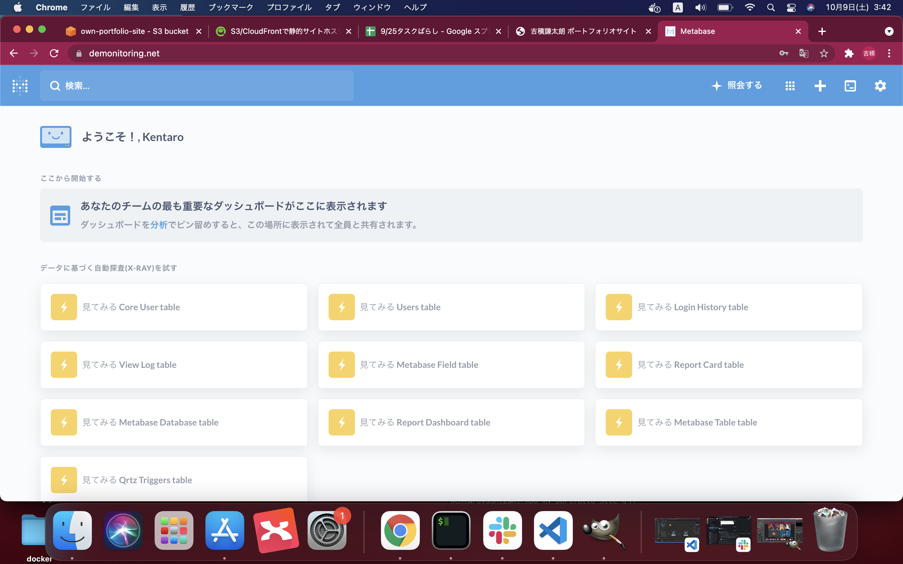
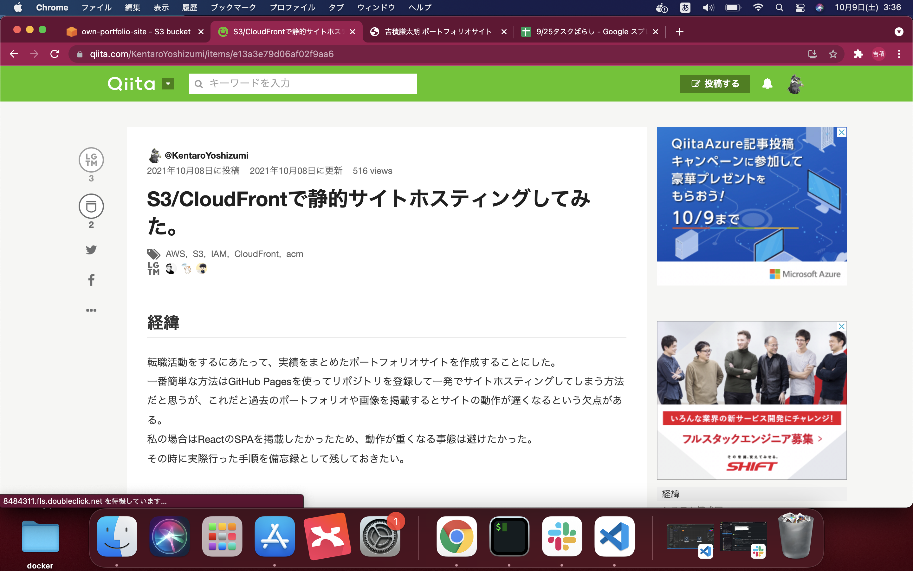

吉積謙太朗 Portfolio Site
about me
パーソナル情報
吉積謙太朗（よしずみ けんたろう）
1992年7月21日生まれ / 29歳
2021年に学習したプログラミングスキル
4月、本格的に学習を開始してから現在まで休む事なく継続して学習を続けています。
HTML,CSS
学習サイトで基礎を学んだ後、ポートフォリオサイト作成を通してアウトプットしました。
JavaScript,jQuery,React
書籍で基礎を学んだ後、写真検索アプリを作成しました。
写真検索アプリAWS
実務案件を通してEC2,RDSを学びました。このサイトもS3/CloudFrontでホスティングされています。
どの様な業務をしたいか
開発に携わることで多くの人の課題解決をしたいです。
少しだけ経験のあるAWSに軸足を置きつつ、新しい技術に触れることで解決できる課題の幅を広げたいという思いがあります。
どの様なエンジニアになりたいか
IT企業を志した理由は、 事業貢献ができるエンジニアになりたいからです。インフラを整備できる人材になって仲間の役に立ちたい＋バックエンド系の言語を身に付けてその言語のスペシャリストになりたいです。長期的に、自分で構築したアプリケーションを公開して運用までできる人材になりたいです。
私の強み
1.継続力
4月に本格的に学習を始めてから今日まで、全くプログラミングに触れなかった日は１日もありません。
GitHubにも積極的にコミットしています。
2.主体的に行動する力
行動の早さ、決断の早さに自信があります。
もくもく会を主催したり、法人化前のスタートアップにcrewwというサービスを通じて企画段階から参画したりと思い立ったら即行動に移す実行力があります。
3.積極的に業務改善する姿勢
店舗HP制作で初めてWEB技術に触れてから、WEBを通した問題解決に取り組んできました。
実務案件に携わった際も、積極的に「もっとこうしたら良い！」を提案することができました。詳細をぜひ下記Qiita記事からご覧ください。
アピールポイント
実運用中サービスのモニタリング体制構築
BIツールのtop画面
{kind=link}
こだわりポイント
- ・シンプルな構成にすることで費用を抑えました
- ・データマスキングの手法を工夫して簡易な個人情報保護を実現しました
- ・BIツールの特性を利用して最新データのモニタリングシステムを実装しました
- ・詳細をQiita記事にまとめてありますので、ぜひご覧ください
→クライアント目線で物事を考える力、発想力、実行力があります
もくもく会主催
主催したもくもく会の様子

こだわりポイント
- ・日曜の朝７時からもくもく会を主催しました
- ・毎週継続
- ・意見の交換を行うとともに、生活習慣の見直しを図りました
- ・朝が苦手なメンバーが積極的に参加
→企画力、自己変革力、周囲への巻き込み力、コミュニケーション能力があります
Qiitaへ技術記事投稿
投稿したQiita記事の一部
{kind=link}
こだわりポイント
- ・静的サイトをAWSへデプロイする方法を画像付きで丁寧に解説
- ・今後も勉強した内容を積極的にアウトプットしていく
→新しい知識をインプットしアウトプットする事を常に意識しています